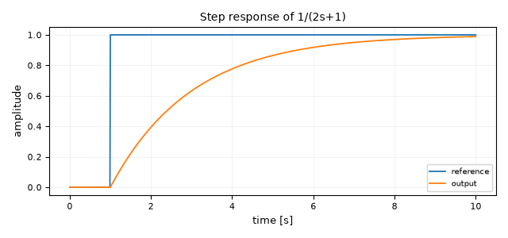
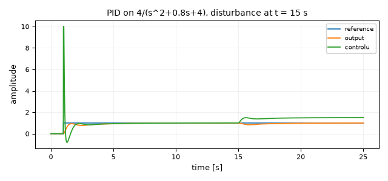
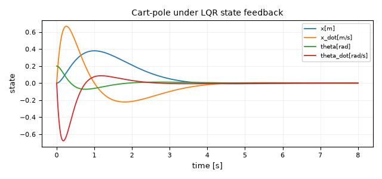
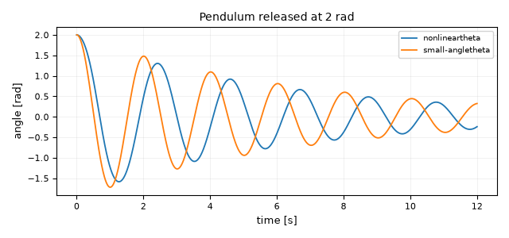
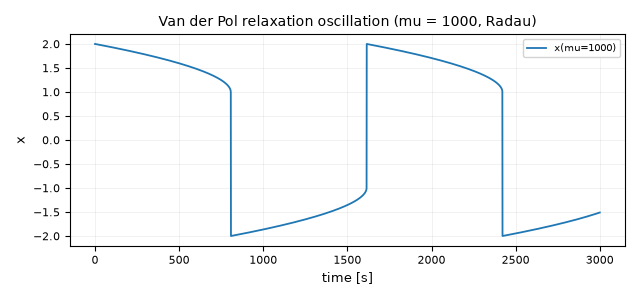
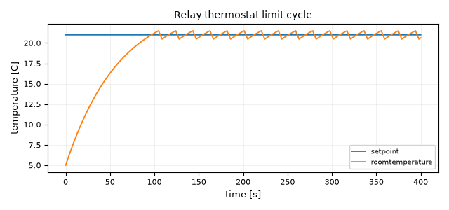
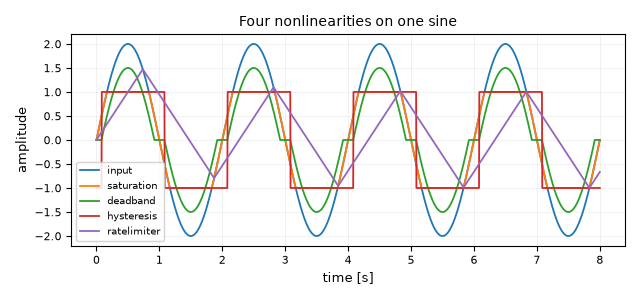
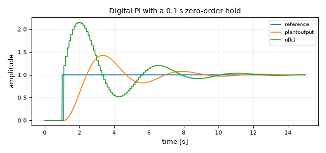
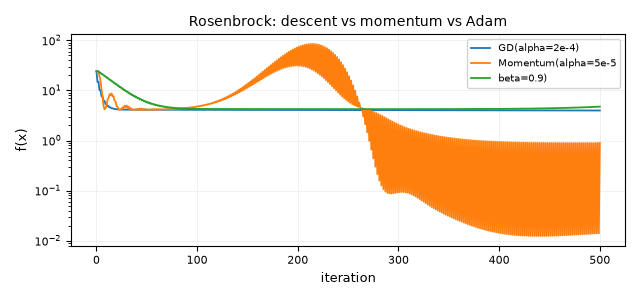

Example gallery¶
Every diagram in examples/ loads, runs headlessly and produces finite Scope
data — tests/integration/test_example_gallery.py runs all of them on every
push. Start at first_order_step_response.diablos and work down.
In the app: File → Open, pick a .diablos file, press F5.
Results appear in Scope / FieldScope windows.
From a terminal, without a display:
python diablos_modern.py run examples/pid_second_order.diablos -o out.csv
python diablos_modern.py export-python examples/pid_second_order.diablos -o model.py
The .diablos format has no diagram-level description field, so the notes below
are the documentation for each file. Verification diagrams additionally carry a
_verification_notes JSON key with the analytical solution they are checked
against. This page mirrors examples/README.md; a test fails if either omits a
shipped diagram.
Getting started¶
first_order_step_response.diablos¶

Three blocks: a Step into 1/(2s+1) into a two-input Scope. The smallest
complete diagram in the folder and the one to copy when starting from scratch —
it shows the wiring convention (reference tapped twice, once into the plant and
once into the scope) that every other control example reuses. Watch the output
reach 63 % of the reference one time constant (2 s) after the step at t = 1 s.
Try Tools → Linearize on it: the recovered transfer function should be the
one written on the block.
pi_loop_three_plants.diablos¶
A PI controller (2s+1)/s closed around 1/(s+1) and an integrator 1/s. Its
value is what it exercises rather than what it teaches: the PI has a non-zero
feedthrough term (D = 2), so the compiled solver must schedule it with the
algebraic group rather than with the strictly-proper state blocks. If a change
to the execution ordering ever regresses, this is the diagram whose output goes
visibly sluggish. See "Compiled Solver Execution Order" in CLAUDE.md.
test_demux_logic.diablos¶
A three-element Constant split by a Demux and recombined through an XOR
LogicalOperator. Small enough to read at a glance, and it is the fixture
behind tests/regression/test_compiled_demux_logic.py, so it doubles as the
worked example of vector routing.
Control¶
pid_second_order.diablos¶

A PID controller with output clamping (u_min/u_max = ±10) driving the
lightly damped plant 4/(s² + 0.8s + 4). The reference steps at t = 1 s and a
labelled load disturbance of −0.5 is injected at the plant input at t = 15 s.
Watch two things on the scope: the control signal sitting on its +10 limit
during the first transient (integrator windup is bounded, not eliminated), and
the integral action pulling the output back to the reference after the
disturbance. Good first target for Tools → Parameter Sweep over Kp.
c01_tank_feedback.diablos¶
Proportional level control of a tank 1/(s + 0.2) with a step reference of
8 units. The classic demonstration of proportional droop: the level settles
below the reference, and the gap shrinks as you raise Kp without ever closing.
c02_vehicle_single_agent.diablos¶
First-order velocity dynamics 1/(s + 1) followed by an Integrator to get
position. The building block every platoon and formation example in this folder
is assembled from.
c03_bode_frequency_response.diablos¶
A sine of unit amplitude through 1/(s + 1), with input and output on one
scope. Read the gain and phase lag straight off the traces, then change omega
and confirm the −20 dB/decade roll-off by hand. Tools → Bode plots the same
information analytically.
c05_mass_spring_state_space.diablos¶
A mass-spring-damper written as a StateSpace block with a 2×2 C, so position
and velocity come out as one vector and land on separate scope traces. The
starting point for anything that needs full state access.
c05_lqr_vs_open_loop.diablos¶
The same oscillator twice: once with its own damping (A[1][1] = −0.5) and once
with the damping an LQR gain would produce (−4), both released from x = 2.
Two StateSpace blocks and no wiring between them — the cheapest possible
before/after comparison.
c06_lqr_state_feedback.diablos¶
A double integrator stabilised by u = −Kx, with K in a MatrixGain and an
unconnected LQR marker block holding the A, B, Q, R that produced it.
Select the marker and run Tools → LQR to recompute the gain, then paste it
back into the MatrixGain and re-run.
c06_observer_estimation.diablos¶
A second-order plant next to a Luenberger observer built from a second
StateSpace whose B carries both the input and the measurement injection.
The error scope is the one to watch: it starts at the initial-condition mismatch
and decays at the observer poles, not the plant poles.
inverted_pendulum_lqr.diablos¶

Cart-pole linearised about the upright equilibrium (M = 1 kg, m = 0.1 kg,
l = 0.5 m), released 0.2 rad off vertical and caught by LQR state feedback. The
plant's C is the 4×4 identity, so a Demux fans the full state onto four
scope traces and a MatrixGain carrying K closes the loop. The story is in
the first two seconds: the controller drives the cart under the falling pole
(x goes positive before it comes back), which is exactly the non-minimum-phase
behaviour that makes the problem interesting. An unconnected LQR block records
the Q = diag(5, 1, 20, 1), R = 1 weights the gain came from — change them,
run Tools → LQR, and paste the new gain in.
pendulum_nonlinear_vs_linear.diablos¶

A pendulum released at 2 rad (115°), integrated twice with sin θ in the loop
via a MathFunction, overlaid on the same scope with a StateSpace small-angle
model started from the same state. Both traces leave together and are visibly
out of phase within two swings: the nonlinear pendulum is slower, because its
period grows with amplitude. Drop the initial angle to 0.2 rad and the two
curves become indistinguishable — that is the small-angle approximation stated
as an experiment.
van_der_pol_stiff.diablos¶

The Van der Pol oscillator at μ = 1000, built from two Integrators, a
MathFunction square and a Product, saved with solver_method = Radau. A
relaxation oscillation: x sits on the cubic nullcline near ±2 for hundreds of
seconds, then flips in a fraction of a second. This is the diagram to open when
choosing a solver — Radau finishes in about a second, while RK45 grinds through
the same 3000 s horizon in over a minute and produces the same picture.
Events and hybrid systems¶
relay_thermostat_events.diablos¶

A Hysteresis relay (±0.5 °C band) heating a room modelled as 1/(60s + 1)
above a 5 °C ambient, with a 21 °C setpoint. Bang-bang control with a genuine
limit cycle: the temperature saws between 20.5 °C and 21.5 °C forever, and the
switching instants are located by the compiled solver's zero-crossing detection
rather than being smeared across an integration step. Widen the band and the
cycle slows down; set zero_crossing to off in the simulation settings and
the corners of the sawtooth soften.
nonlinear_blocks.diablos¶

One sine wave fanned into Saturation, Deadband, Hysteresis and
RateLimiter, with all five signals on one scope. The reference card for what
each nonlinearity does to a smooth input: clipping at ±1, a flat spot through
zero, a two-valued switch that depends on the direction of travel, and a slope
limit that turns the sine into a triangle.
Discrete and multi-rate¶
discrete_pi_zoh.diablos¶

A sampled-data loop: the continuous error passes through a ZeroOrderHold at
Ts = 0.1 s into a DiscreteTranFn PI controller (1.2 − z⁻¹)/(1 − z⁻¹), which
drives the continuous plant 2/((s+1)(s+2)). The command trace is a staircase
while the plant output is smooth — the visual definition of a sampled-data
system. Raise the sample time towards 0.5 s and watch the loop lose phase margin
and start ringing.
multirate_demo.diablos¶
A 2 Hz sine sampled at 10 Hz by a ZeroOrderHold, then upsampled to 100 Hz by a
RateTransition in Linear mode, with a FirstOrderHold on a second scope for
comparison. Shows the three reconstruction behaviours side by side: staircase,
interpolating ramps and extrapolating sawtooth. See the
Multi-Rate page for the full treatment.
Networks and multi-agent systems¶
c02_string_instability.diablos¶
Three identical vehicles in a string, each following the one ahead through
(0.9s + 0.2)/(s³ + s² + 0.9s + 0.2). The leader's step is amplified as it
propagates: vehicle 3 overshoots more than vehicle 1. That growth along the
string is string instability, and it is why constant-headway spacing policies
exist.
c08_consensus_ring.diablos¶
Four agents on a ring, written as a single StateSpace whose A is the
negative graph Laplacian. All four states converge to the average of their
initial conditions — the canonical consensus result, in one block.
c08_consensus_topology.diablos¶
The same experiment on a path graph and on a complete graph, side by side from identical initial conditions. The complete graph settles several times faster: the convergence rate is the second-smallest Laplacian eigenvalue, and you can see the ratio directly in the two scopes.
c09_formacion_distancia.diablos¶
Two agents in the plane running a distance-based formation law, with the
position error driven through MatrixGain and SgProd blocks and the squared
inter-agent distance on its own scope converging to the desired 4. Includes an
AgentScope that animates the agents in the plane rather than against time.
c11_opinion_dynamics.diablos¶
Six people on a social graph running the same Laplacian flow as the consensus examples, started from spread-out opinions. Watch the sub-communities agree with each other before the whole network does.
c12_sis_epidemics.diablos¶
Networked SIS epidemics: an Integrator holding six infection probabilities, a
MatrixGain carrying the adjacency matrix, and a Function block evaluating
0.5·(Ax)ᵢ·(1 − xᵢ) − xᵢ. One node starts at 30 % infected; the endemic
equilibrium the whole network settles to depends on the ratio of infection to
recovery rate.
c12x_kuramoto_sync.diablos¶
Six Kuramoto oscillators with heterogeneous natural frequencies and coupling
strength 3.0, written as a single Function block over the phase vector. The
phases fan out, then lock into a common drift. Lower the coupling in the
expression and synchronisation is lost.
c13_distributed_subgradient.diablos¶
Six agents minimising the sum of their local costs by combining a consensus term
with a pull towards their own target, again folded into one StateSpace. The
estimates converge to the average of the local targets rather than to any single
agent's optimum.
Optimization¶
The first four diagrams here drive Tools → Run Optimization, which searches
over the Parameter blocks to minimise the CostFunction block. Open one, run
the optimizer, and the tuned values are written back into the Parameter
blocks.
optimization_basic_demo.diablos¶
One tunable gain. A Parameter block feeds an SgProd acting as the
controller, and an ISE CostFunction measures tracking error on
1/(s² + 2s + 1). The simplest possible optimization setup, and the wiring
pattern the others extend: parameters are ordinary signals, and the Optimizer
block is an unconnected marker.
optimization_pid_tuning_demo.diablos¶
Three tunable parameters (Kp, Ki, Kd) multiplying the proportional,
integral and derivative branches of a hand-built PID, minimising ITAE on
1/(s² + 1.5s + 1) with Nelder-Mead. ITAE weights late error more heavily than
early error, so the tuned response settles rather than merely rising fast.
optimization_constrained_demo.diablos¶
The same loop under a Constraint block: peak output ≤ 1.15. With the shipped
gains the plant overshoots to about 1.45, so the constraint scope starts at a
non-zero violation — that is the point. SLSQP is required here; the
unconstrained methods ignore Constraint blocks.
optimization_data_fit_demo.diablos¶
A gain and a first-order lag producing the reference response that
optimization_sample_data.csv was generated from. Point a DataFit block at
that CSV and add Parameter blocks for the gain and the time constant to turn
it into a model-calibration exercise.
Optimization primitives¶
These build optimizers out of ordinary blocks in a feedback loop, one iteration
per time step (sim_dt = 1.0), so the "time" axis on their scopes is an
iteration counter.
gradient_descent_simple.diablos¶
The minimal loop: a StateVariable holding x, an ObjectiveFunction for
x₁² + x₂², a NumericalGradient built from two VectorPerturb evaluations,
and a VectorGain of −0.2 closing the loop. Read this one before the others.
gradient_descent_demo.diablos¶
The same descent at α = 0.1 with a ResidualNorm on the gradient, so you can
watch ‖∇f‖ decay geometrically alongside the cost.
gradient_descent_verification.diablos¶
Runs the numerical descent against the closed form x(k) = (1 − 2α)ᵏ x₀
computed in parallel from a Ramp and a MathFunction, and displays the
absolute difference. It should stay below 1e-10 for the whole run.
momentum_demo.diablos¶
Momentum (α = 1e-4, β = 0.9) on the Rosenbrock function from the classic start x₀ = [−1.2, 1]. The cost spikes as the iterate is flung across the valley, then descends — velocity is what lets it make progress along the valley floor at all, and also what makes it overshoot.
adam_demo.diablos¶
Adam on the same Rosenbrock function from [−2, 2]. Per-coordinate step sizes cope with the enormously different curvatures along and across the valley without any hand-tuning of α.
newton_method_demo.diablos¶
A RootFinder block solving x₁² + x₂ − 1 = 0, x₁ + x₂² − 1 = 0 from
[0.5, 0.5], with both residuals and ‖F(x)‖ on scopes. Convergence is
quadratic — the residual norm falls off the bottom of the plot in a handful of
iterations.
newton_method_verification.diablos¶
The same system from [0.8, 0.2], measured against the exact root [1, 0]. Both
‖x − x*‖ and ‖F(x)‖ should reach 1e-10 or below.
linear_system_demo.diablos¶
LinearSystemSolver solving Ax = b for A = [[2, 1], [1, 3]], b = [5, 7], with
the answer and the recomputed Ax shown on Display blocks. Note that this
diagram has no Scope at all — the result is a number, not a trajectory.
linear_system_verification.diablos¶
The same solve, with ‖x − x*‖ against the exact [1.6, 1.8] and the residual
‖Ax − b‖ on Display blocks. Both should read below 1e-14.
learning_rate_comparison.diablos¶
Four independent gradient-descent loops on f(x) = x² at α = 0.1, 0.4, 0.6 and
1.2, sharing one scope. The four regimes of |1 − 2α|: slow, near-optimal,
oscillating and divergent. The α = 1.2 trace is supposed to run away — it is
the lesson, not a bug.
optimizer_comparison.diablos¶

Gradient descent, momentum and Adam on Rosenbrock from x₀ = [−1.2, 1] with the step sizes each needs to stay stable (2e-4, 5e-5 and 5e-3). Momentum reaches the lowest cost; plain descent is monotone but slow. The honest takeaway is that each method needs its own learning rate — the same α makes two of the three diverge.
convergence_rates.diablos¶
Gradient descent against Newton's method on the root of 4x³, with a
log₁₀|x| scope. Linear convergence is a straight line on that scope; quadratic
convergence falls off a cliff.
Partial differential equations¶
PDE blocks discretise space with the method of lines and hand the resulting ODE
system to the same solver everything else uses. FieldProbe extracts a scalar
for a Scope; FieldScope shows the whole field over time as a heatmap.
Demonstrations¶
heat_equation_demo.diablos¶
∂T/∂t = α∇²T on a rod with N = 20 nodes, held at 100 °C on the left and 0 °C
on the right from a uniform 20 °C start. Two FieldProbes at x = 0.25 and
x = 0.5 track the interior temperatures towards the steady linear gradient
(75 °C and 50 °C), and the FieldScope shows the heat front sweeping right.
wave_equation_demo.diablos¶
A vibrating string released from a sinusoidal displacement with fixed ends. The
FieldScope shows a standing wave; the probes show simple harmonic motion at
the fundamental.
advection_equation_demo.diablos¶
A Gaussian pulse transported at constant velocity past three probes. Watch the
pulse broaden as it travels — that spreading is numerical diffusion from the
first-order upwind scheme, not physics. Raise N and it shrinks.
diffusion_reaction_demo.diablos¶
∂c/∂t = D∇²c − kc: diffusion and first-order decay together, sampled at three
positions. The profile spreads and sinks at the same time.
heat_equation_2d_demo.diablos¶
The 2D heat equation on a 25×25 plate, hot on the left edge, insulated top and
bottom. FieldScope2D renders the plate with a time slider; FieldProbe2D
blocks pull out the centre and off-centre temperatures.
pde_comparison_demo.diablos¶
Heat, wave and advection equations from the same sinusoidal initial condition,
each with its own FieldScope, plus one shared scope comparing the value at
x = 0.5. Diffusion decays, the wave oscillates, the pulse translates — three
behaviours from three one-line PDEs.
pde_neumann_bc_demo.diablos¶
An insulated rod (zero-flux Neumann boundaries) with a Gaussian hot spot. The
FieldIntegral scope is the one to watch: total heat stays constant while the
profile flattens, which is the numerical statement that no energy leaves through
the ends.
Verification diagrams¶
Each of these runs the numerical solution alongside its analytical counterpart
and plots the difference. They carry the problem statement and the closed-form
solution in a _verification_notes key inside the file.
heat_equation_1d_verification.diablos¶
T(x, 0) = sin(πx/L) decays as exp(−απ²t/L²) with the shape preserved; the
error scope should stay near zero.
wave_equation_1d_verification.diablos¶
u(x, t) = sin(πx/L)·cos(πct/L): a standing wave of period 2L/c = 2 s.
advection_equation_1d_verification.diablos¶
A Gaussian translated at velocity v. The error here is dominated by the upwind scheme's numerical diffusion, so it is larger than in the other three — this diagram is where you see the cost of a first-order scheme.
diffusion_reaction_1d_verification.diablos¶
c(x, t) = sin(πx/L)·exp(−(Dπ²/L² + k)t): diffusion and reaction contribute
additively to the decay rate.
heat_equation_2d_verification.diablos¶
T = sin(πx)·sin(πy)·exp(−2απ²t) on the unit square — the 2D separable mode,
with a time slider on the field view.
Experiments¶
monte_carlo_robustness.diablos¶
A PI loop whose measurement path passes through a Noise block (σ = 0.02) and a
PacketLoss block (20 % Bernoulli loss, sampled at 20 Hz, hold-last-value on
drop). Both expose a seed, which is what makes this diagram an experiment
rather than a single run: Tools → Monte Carlo derives a per-block sub-seed
from one master seed for each replicate, so the whole ensemble is reproducible
from a single number. Run 50 replicates and read the spread of overshoot and
settling time off the ensemble window. parameter_sweep works the same way for
deterministic sweeps — try it on pid_second_order.diablos over Kp.
Library blocks and masks¶
library_block_demo.diablos¶
A masked Vehicle subsystem — v(s)/F(s) = 1/(ms + b) — inside a
proportional speed loop tracking 20 m/s. The mask exposes the mass m and
damping b as ordinary parameters; the inner TranFn stores
denominator = "[m, b]" and the mask resolves those names before flattening, so
the symbolic expression survives every save and re-run. Select the Vehicle block
and edit m in the property panel to see the response change; the steady state
is 20·K/(K + b).
The same block is published as a library block in examples/library/:
"Vehicle" then appears in the palette under User Library, ready to drop into any diagram. See Library blocks and masks in USER_MANUAL.md.
Other files in this folder¶
| File | What it is |
|---|---|
library/vehicle.diablos |
The published form of the Vehicle library block above. |
optimization_sample_data.csv |
Sample measurements for a DataFit block. |
Adding your own¶
- Build the diagram, set sim_time / sim_dt (and the solver, if it is stiff)
in the simulation settings, and add a
Scope. - Save it in
examples/as<topic>_<what_it_shows>.diablos. - Add a paragraph to
examples/README.mdand to this page — a test fails if either omits a shipped diagram. - Optionally add a
_verification_noteskey with the analytical solution: